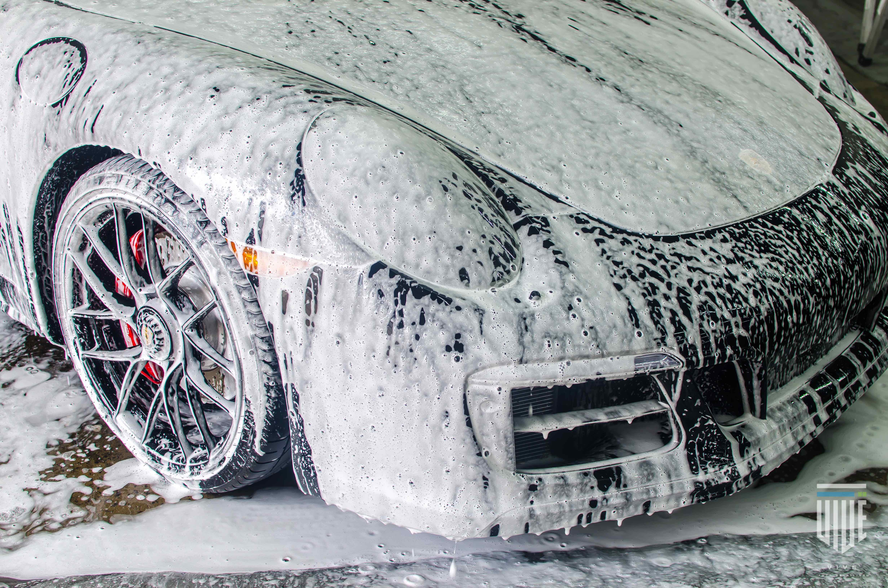
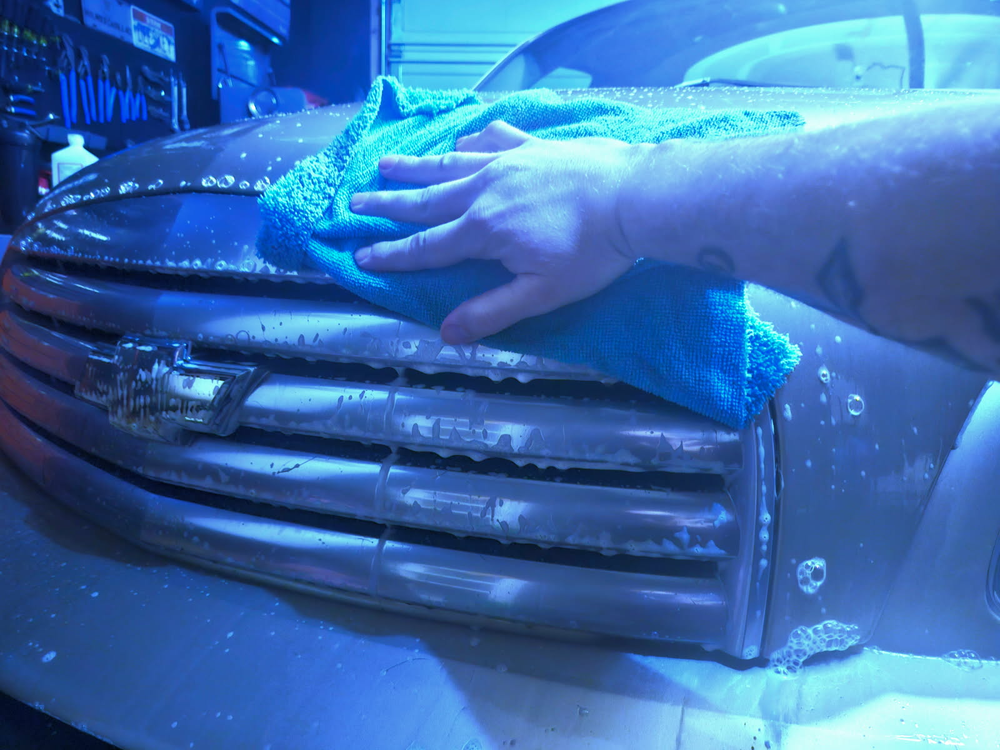
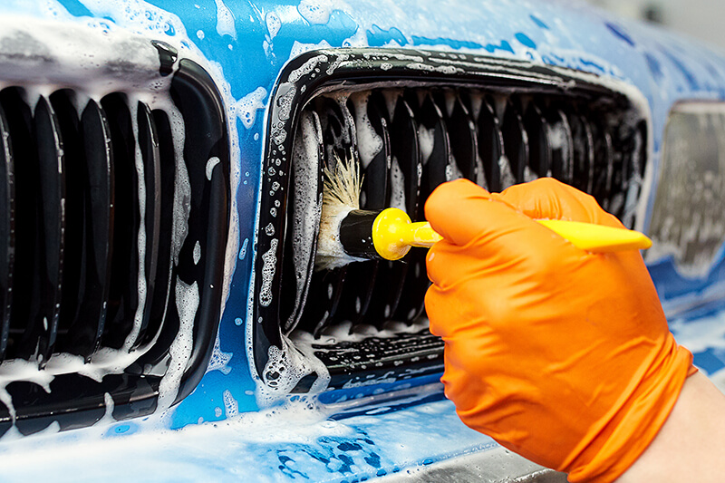

Full Exterior Detailing




Step 1: Gather Your Supplies
Before you start, make sure you have all the necessary tools and products:
Car shampoo (pH-balanced for paint)
Microfiber wash mitt
Bucket with grit guard
Wheel cleaner & brush
Tire cleaner & brush
Clay bar & lubricant
Car wax (paste, liquid, or spray)
Microfiber towels
Drying towel or chamois
Polish or paint correction (optional)
.
Step 2: Rinse the Exterior
Start by thoroughly rinsing your car with water to remove loose dirt, debris, and grime. This will prevent scratching the paint during the washing process. Be sure to rinse the wheels and tires as well.
Step 3: Clean the Wheels and Tires
Spray a wheel cleaner on the rims and a tire cleaner on the sidewalls. Use a brush to scrub the rims, ensuring you get into all the nooks and crannies. Don’t forget to clean the tires with a separate brush to remove built-up dirt and grime. Rinse thoroughly.
Step 4: Wash the Car
Using a microfiber wash mitt, dip it into a bucket of car shampoo mixed with water. Start washing the car from the top down to avoid spreading dirt to lower areas. Work in sections to prevent the soap from drying on the surface. Rinse each section after washing, and repeat the process until the entire car is clean.
Step 5: Dry the Exterior
Once the car is thoroughly washed and rinsed, use a microfiber drying towel or chamois to gently dry the car’s surface. Drying the car as soon as possible prevents water spots and streaks from forming on the paint.
Step 6: Clay Bar Treatment
To remove embedded contaminants like tree sap, industrial fallout, or road tar, use a clay bar. Spray the clay lubricant onto a section of the car and gently rub the clay bar back and forth on the surface. This will smooth out the paint, leaving it free of contaminants. Once done, wipe away any excess lubricant with a clean microfiber cloth.
Step 7: Polish (Optional)
If your car has minor swirl marks, scratches, or faded paint, you can apply a polish to restore the paint’s clarity and smoothness. Apply a small amount of polish to a soft applicator pad and work it into the surface using small circular motions. Once applied, wipe off the residue with a clean microfiber towel.
Step 8: Apply the Wax
Now it’s time to protect and shine your car! Using a wax applicator pad, apply a thin layer of car wax to the surface in small circular motions, working one section at a time. Make sure the wax is applied evenly. Once the wax hazes over (usually after a few minutes), buff off the excess with a clean, dry microfiber towel, using a light back-and-forth motion. Repeat this process across the entire car.
Step 9: Final Buffing
After the wax has been buffed off, give the car a final once-over with a clean microfiber towel to ensure all areas are buffed to a brilliant shine. Pay attention to any spots that may need extra polishing or buffing for an even finish.
Step 10: Clean the Windows and Trim
Don’t forget about the finishing touches! Clean the windows and mirrors with a glass cleaner to ensure no streaks remain. If your car has black trim, you can use a trim restorer to bring back that rich black finish and protect it from fading.
Enjoy Your Glossy, Protected Ride!
By following these steps, you’ve given your car a professional-quality exterior detail and a protective wax finish. Not only does this process restore your vehicle’s shine, but it also helps protect the paint from the elements, ensuring your car stays looking great for longer.
Contact Deeskey Customs and Detailing for all your detailing needs. Let us help you keep your ride looking its best!